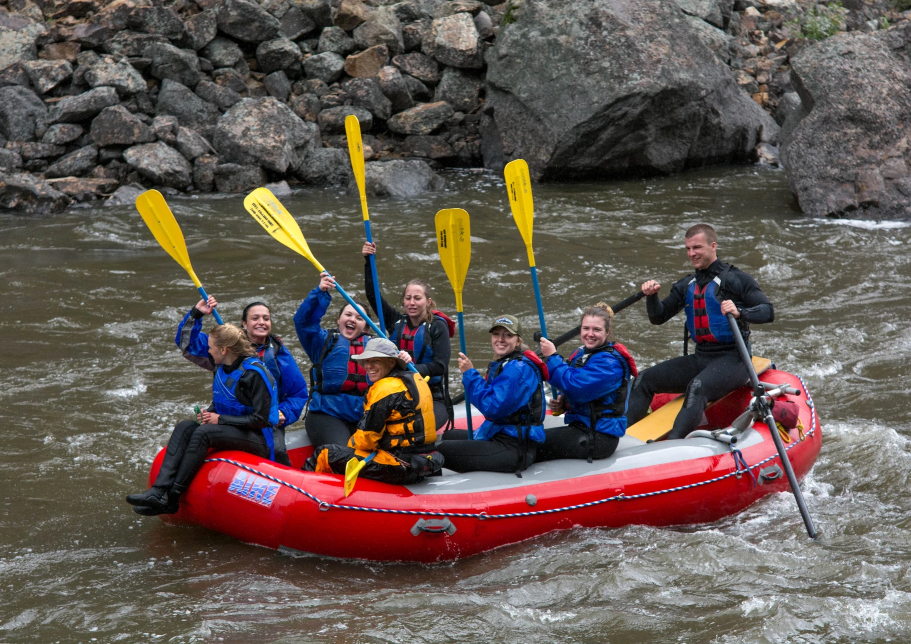

Plans

Extream Rapids
This rafting packet is only for the faint of heart it oncludes going over insane rapids with some of the best guides in the world. This Pack includes a guide, is a two days long and comes with packed meals($500).

Relaxing tides
This is our simplest package that around 3 hours long on a smooth river with to rapids to worry about. This is a great river for kids.($45).


Senic Waves
This is a river with amazing views that in on an intermediate hard river. Some of the scenic views are waterfalls, rock formations, and trees.(100).